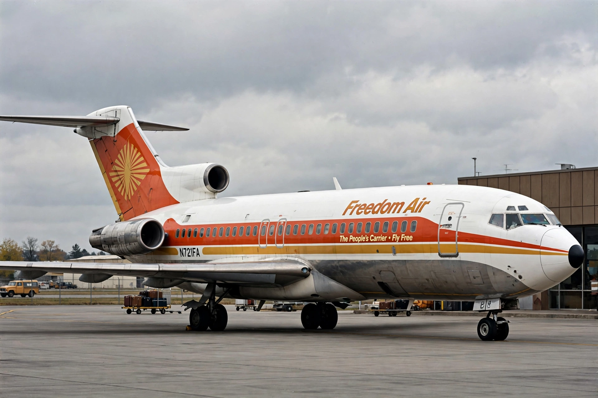

Deregulation
From Wikipedia, the free encyclopedia

Deregulation is the removal or reduction of government regulation in a particular industry, usually enacted to increase competition and efficiency. The modern wave began in the United States in the late 1970s — airlines (1978), trucking, rail and telecommunications — and spread globally through the 1980s–90s, reshaping finance, energy and media. Its record is contested: cheaper air travel and telecoms innovation stand against charges of instability, inequality and the 2008 financial crisis.
The American wave
Bipartisan in origin — driven by economists' critique of capture (George Stigler), Ted Kennedy's hearings and Alfred Kahn's Civil Aeronautics Board — the Airline Deregulation Act of 1978 abolished fare and route controls, collapsing real ticket prices and remaking the industry into hub-and-spoke networks with repeated bankruptcies. Carter and then Reagan deregulated trucking, rail and much of finance (the 1982 Garn–St Germain Act's role in the savings-and-loan crisis being the cautionary tale; the 1999 Gramm–Leach–Bliley repeal of Glass–Steagall remains debated in 2008's autopsy).
Global and later
Britain's privatisation-cum-deregulation under Thatcher, the EU single market, telecoms liberalisation and electricity restructuring worldwide followed variants of the model. Post-2008 and post-pandemic politics swung partly back — industrial policy, antitrust revival and strategic-sector reregulation — while digital platforms pose the newest case for and against the old medicine.